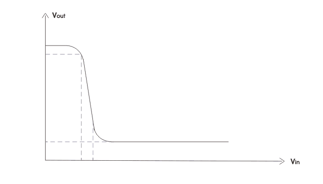

MOSFET which has become the most commonly used three terminal devices brings revolution in the world of electronic circuits. Without MOSFET, the design of integrated circuits seems impossible nowadays.
These are quite small and their process of manufacturing is very simple. The implementation of both analog and digital circuits integrated circuits is successfully done because of the characteristics of MOSFET, strong> MOSFET circuits can be analyzed in two ways-large signal model small signal model.
The large signal model is nonlinear. It is used to solve for the de values of the device currents and voltage. The small signal model can be derived based on the linearization of large signal model. The cut-off region, the triode region and the saturation region these are the three regions of operation MOSFET. When gate to source voltage (VGS) is less than threshold voltage (Vtn), the device is in cut off region. When MOSFET is used as an amplifier, it is operated in saturation region. It is in triode or cut off region when it is used as a switch.
MOSFET Driver Circuits
For helping MOSFET’s to maximize the turn on and turn off time, the driver circuits are needed. If the MOSFET takes relatively long time going in and out of conduction, then we cannot use the advantage of using MOSFETs. This will cause MOSFET to heat up and device will not function properly. MOSFET drivers can often use bootstrap’s circuit to create voltages to drive the gate to a higher voltage than the MOSFETs supply voltage.
Practically the gate of MOSFET acts like a capacitor to the driver, or the driver can turn on or off MOSFET very rapidly, by charging or discharging the gate respectively.
MOSFET Switching Circuits
MOSFET works in three regions cut off region triode region and saturation region. When MOSFET is in cut off triode region, it can work as switch.
MOSFET switching circuits consists of two main part- MOSFET (works as per transistor) and the on/off control block. MOSFET passes the voltage supply to a specific load when the transistor is on. In most of the cases n-channel MOSFETs are preferred over p-channel MOSFETs for several advantages.
In a MOSFETs switching circuit the drain is connected directly to the input voltage and the source is connected to the load. For turning on n-channel MOSFET, the gate to source voltage must be greater than the threshold voltage must be greater than the threshold voltage of the device. For p channel MOSFET the source to gate voltage must be greater than the threshold voltage of the device. MOSFET behaves as a better switch than BJT because the offset voltage does not exist in MOS switches.
MOSFET Inverter Circuits
Inverter circuit is one of the fundamental building blocks in digital circuit design. The inverters can be applied directly to the design of logic gates and other more complex digital circuits. The transfer characteristics of an ideal inverter is shown below.

Early MOS digital circuits were made using p-MOSFET. But with the advancements of microelectronics technology the threshold voltage of MOS can be controlled and an MOS technology becomes dominant, as the majority carries of n-MOS, i.e electrons are twice faster than the holes, the majority carriers of p-MOS, so the inverter circuits also using n-MOS technology until CMOS technology arrived. Here we discuss three types of MOS inverter circuits.
Resistive load n-MOS inverters : it is the simplest MOSFET inverter circuits, it has a load resistance R and n-MOS transistor connected in series between supply voltage and ground as shown below.
Resistive load n-MOS inverter
If Vin is less than the threshold voltage of the n- MOS the transistor is off. The capacitor can be changed to supply voltage and the output voltage equals to the supply voltage. When the input is greater than the threshold voltage of the transistor and we get zero voltage at output it’s disadvantages is that it occupies large area IC fabrication.
Active load n MOS inverter : Here we use n MOS transistors as active load instead of resistor. There are two kinds of transistors in the circuit pull down transistor to pull the output voltage to the lower supply voltage (usually OV ) and pull up transistor to pull the output voltage to the upper supply voltage.
in the following circuit, we can see a pull up and pull down n MOSFET. The gate of the pull up is shorted to supply voltage to make it always on.
Active load n-MOS inverters
CMOS inverter: The CMOS inverter is built using an n MOS – p MOS pair sharing a common gate. P channel transistor is used as pull up transistor and v channel transistor is used as pull down transistor
CMOS Inverter
When Vin is less than the threshold of n MOS the n MOS turns off but p MOS turns on. The capacitor thus will be charged to supply voltage and we obtain equals to supply at output.
when Vin is greater than the threshold of n MOS the n MOS turns on but p MOS turns off. The capacitor thus will be discharged to supply voltage and we obtain voltage equals to zero at output.
The advantages are CMOS inverters circuit dissipates power only during switching event. And in the voltage transfer curve we observe sharp transition. But in fabrication extra process steps are required.
 by
by {kind=link}
{kind=link}
{kind=link}
{kind=link}